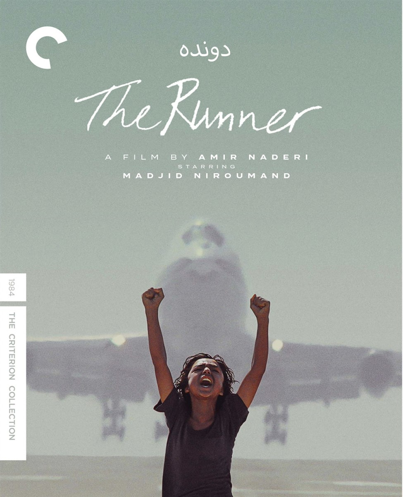

This week, I found this post on Instagram and it rang bells - ON Ed
Posted to Instagram by The Good Films - @the_goodfilms
These films help you to understand the Iranian people, beyond the headlines, revealing stories of love, family,
identity and resilience through deeply human and unforgettable moments.
Open on original site ↗In the late 90’s I was in a band in Bristol called Drift... and that is what we did. One song we wrote was Hollywood Threat. The lyrics were mine. ON Ed
It's a Hollywood threat
but it’s not happened yet
it’s a Hollywood thrill
at the top of the hill...
don’t let them in
they’ll destroy every sign of life
you’re better off with a tin can
with an old tin can, and a block of ice...
This is over simplistic but the idea behind the song was that Hollywood blockbusters are responsible for creating division by always casting Russians, and indeed Iranians, as the bad guys. American’s as judge less heroes, killing the idea of the beauty of cultural understanding dead on a screen. The island mentality of the USA, ignorant to wonder, lapping up dumb glory.
The counter reference in the song is The Runner, an Iranian film I had seen a few years before. It’s the story of Niroumand, an 11 year old orphan who survives by selling water and blocks of ice.
THE RUNNER
SOURCE: CRITERION COLLECTION
Childhood takes on mythic dimensions in one of the defining works of postrevolutionary Iranian cinema. Inspired by director Amir Naderi’s own boyhood, The Runner is lit from within by Madjid Niroumand’s electrifying performance as a young orphan fending for himself on the streets of a port city, determined to rise above his circumstances—working odd jobs, passing time with friends, learning to read—and running, always running, toward the future. Water, fire, the human body in motion: in hypnotic images of lyrical power, Naderi finds unexpected glory in the world of a boy suspended between modernity and elemental natural forces as he chases his own path forward.
Open on original site ↗